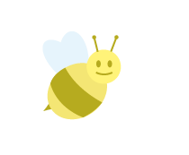

Nos amies les abeilles
Les abeilles (Anthophila) forment un clade d'insectes hyménoptères de la superfamille des Apoïdes. Au moins 20 000 espèces d'abeilles sont répertoriées sur la planète1 dont environ 2 000 en Europe et près de 1 000 en France2. En Europe, l'espèce la plus connue est Apis mellifera qui, comme la plupart des abeilles à miel, appartient au genre Apis. Cependant, la majorité des abeilles ne produit pas de miel, elles se nourrissent du nectar des fleurs. Une abeille d'hiver peut vivre jusqu'à 10 mois, tandis qu'une abeille d'été peut vivre jusqu'à 1 mois. Les abeilles peuvent être classées selon leur mode de vie : abeilles domestiques ou sauvages, solitaires ou bien sociales, etc. Elles sont nettement distinctes des guêpes par leur morphologie et leur comportement, notamment leur alimentation. Les bourdons en revanche sont un groupe particulier d'abeilles3,4.